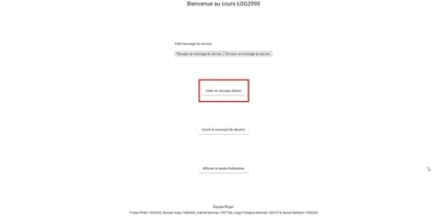

Grace au boutton créer un nouveau dessin (présent sur point d'entrée de l'application et sur la barre latérale) ou avec les touches "CTRL + o" il est possible de créer un nouveau dessin. Si il y a un déssin deja présent lors de l'utilisation de cette fonction l'utilisateur recevra un aveertissement confirmant ou non vouloir abondonner ses changements.
Le boutton "pencil" permet d'acceder a l'outil crayon, ce dernier peut etre utiliser pour dessiner sur le canvas. Il est possible de changer la couleur et la largeur du trait grace au option données sur la toolbar.
Le boutton "___" permet d'acceder a l'outil pinceau, ce dernier peut etre utiliser pour dessiner sur le canvas avec divers textures. Il est possible de changer la couleur, la texture et la largeur du trait grace au option données sur la toolbar.
Le boutton "line" permet d'acceder a l'outil ligne, ce dernier peut etre utiliser pour dessiner des lignes droites sur le canvas ou plusieur segments qui se suivent. Il est possible de changer la couleur et la largeur des segments grace au option données sur la toolbar.
Le boutton "eraser" permet d'acceder a l'outil efface, ce dernier peut etre utiliser pour effacer der dessin deja present sur le canvas. Il est possible de changer la largeur de l'efface grace au option données sur la toolbar.
Le boutton "rectangle" permet d'acceder a l'outil "rectangle", ce dernier peut etre utiliser pour dessiner des rectangles et carrées sur le canvas. Lors de l'utilisation de cet outil si la touche shift est utilisée un carrée sera tracé a la place d'un rectangle. Il est possible de choisir 3 types de tracé (Contour, Plein ou Plein avec contour). Il est possible de choisir la couleur du contour et du 'filling' séparement, et la largeur du contour grace au option donnée sur la toolbar.
Le boutton "ellipse" permet d'acceder a l'outil "ellipse", ce dernier peut etre utiliser pour dessiner des ellipses et cercles sur le canvas. Lors de l'utilisation de cet outil si la touche shift est utilisée un cercle sera tracé a la place d'une ellipse. Il est possible de choisir 3 types de tracé (Contour, Plein ou Plein avec contour). Il est possible de choisir la couleur du contour et du 'filling' séparement, et la largeur du contour grace au option donnée sur la toolbar.